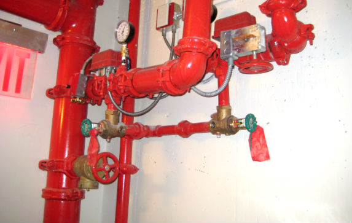
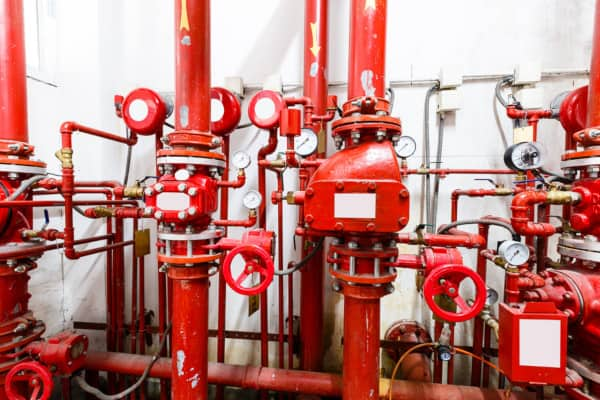
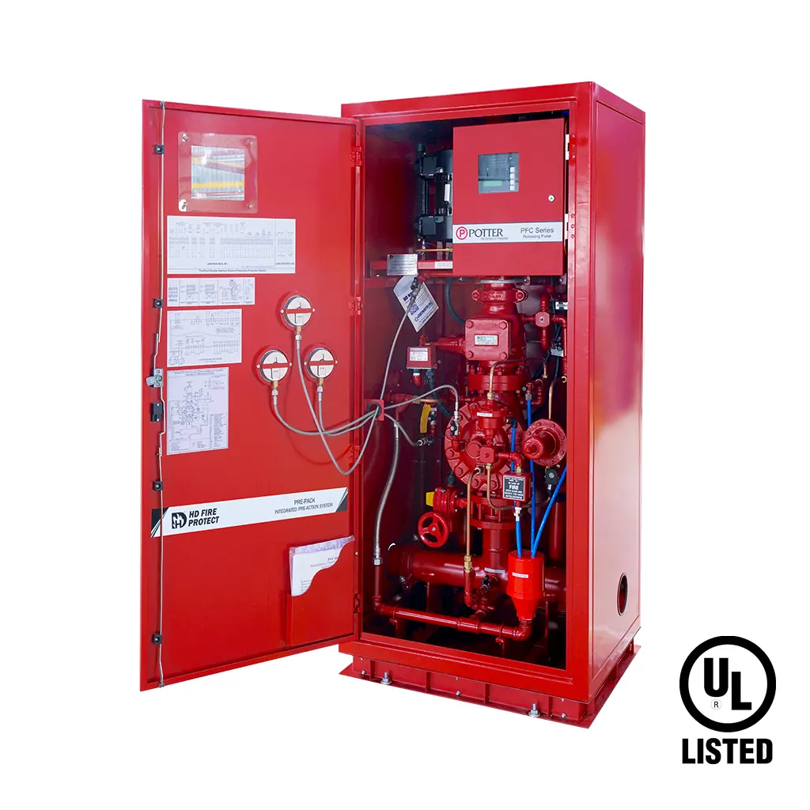

Our Services
We are your one-stop shop for comprehensive fire safety and prevention services! From expert design to pumps, sprinklers, maintenance, repairs, and remodels, we handle it all to ensure your property and loved ones are fully protected. Our systems are meticulously designed and installed to meet NFPA codes and standards, ensuring the highest level of safety and compliance for your building.
Design Services

Our expert design team ensures that every fire safety system is tailored to meet your building’s unique needs. We work with precision, using advanced tools and techniques to create comprehensive blueprints that integrate seamlessly with your property. Whether it’s a new installation, remodel, or upgrade, our design solutions prioritize efficiency, compliance, and optimal protection for your property and loved ones. With a customer-first approach, we guide you through every step of the design process, ensuring your fire safety system is not just effective but also built to last.
Wet Pipe Sprinkler System
Wet systems are the most common and reliable sprinkler systems. Since no equipment other than the sprinkler heads are required to operate, this makes them a very reliable and low maintenance sprinkler system. Wet systems use automatic sprinkler heads. These heads are attached to piping containing water, which are connected to a water supply. This allows water to be discharged immediately from an open sprinkler. Water will only be discharged through heads that have opened due to fire. There are two basic types of wet systems. We work with both and based on the customers need and the specifications of the building they are being installed into we will recommend either the Straight Pipe Riser or the Wet System with an Alarm Check Valve.
Dry Pipe Sprinkler System
Dry pipe systems are typically installed in unheated buildings or where there is the danger of sprinkler pipes freezing. This particular system uses automatic sprinklers attached to a piping system pressurized with air. These systems hold back the water supply using a dry pipe valve and air pressure. Once the air pressure within the system bleeds off due to an open sprinkler, the water pressure will open the valve and fill the system. Water is only discharged through open heads due to a fire.
Pre-Action System
There are two kinds of pre-action systems. Single Interlock Systems and Double Interlock Systems. Pre-Action systems are very similar to dry pipe systems, except instead of a dry pipe valve to hold back the water supply they use an electrically operated valve. Unlike conventional dry pipe systems, they are designed to overcome the operational delay, and also eliminate the possibility of water damage cause by accidental damage to the sprinkler heads or system piping. After a thorough walk through with our clients and custom design solution, we will determine what style of pre-action system is best for your building.